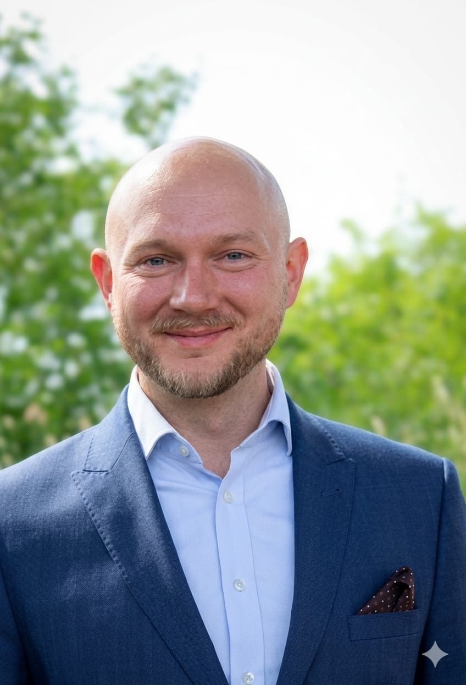
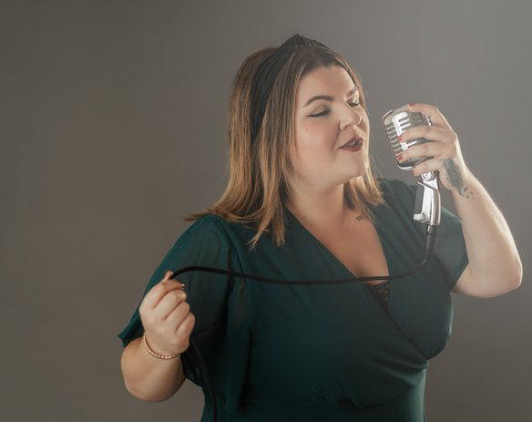
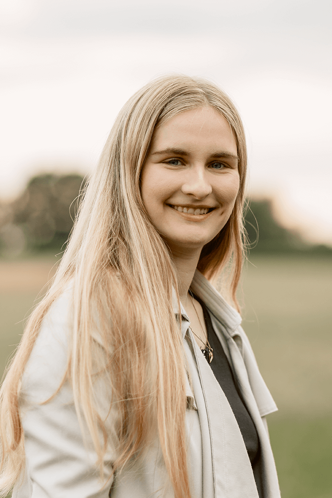

Eure Liebe ist einzigartig. Deshalb sollte es eure Zeremonie auch sein. Als euer freier Trauredner gestalte ich euren großen Tag so persönlich, tiefgründig und herzerwärmend wie eure gemeinsame Reise.
"Eine freie Trauung ist dann perfekt, wenn gelacht wird, Tränen der Rührung fließen und ihr euch in jedem einzelnen Wort zu 100 % wiederfindet."
Keine vorgefertigten Textbausteine. Jedes Wort schreibe ich exklusiv für euch, basierend auf euren ganz persönlichen Geschichten, Marotten und Meilensteinen.
Als Trauredner im Herzen der Lüneburger Heide liebe ich Zeremonien im Freien. Ob im blühenden Heidekraut oder unter alten Eichen – wir zelebrieren die Natur.
Eine gute Rede benötigt Zeit. In intensiven Gesprächen oder über einen umfangreichen Fragebogen lerne ich euch wirklich kennen, um die Feinheiten eurer Liebe einzufangen.

Schön, dass ihr hier seid. Als freier Trauredner hat eine Berufung mich gefunden — als ich in einem Jahr gleich mehrfach von verschiedenen Freunden unabhängig voneinander angesprochen wurde, ob ich als Trauredner auf ihrer Hochzeit sprechen möchte. Aus einer Ehrensache wurde eine Leidenschaft. Menschen an ihrem glücklichsten Tag zu begleiten und ihre einzigartige Liebesgeschichte in Worte zu fassen, ist etwas ganz Besonderes.
Ich wohne im Herzen der wunderschönen Lüneburger Heide. Diese weite, beruhigende Natur inspiriert mich jeden Tag aufs Neue. Ich bin ein aufmerksamer Zuhörer, ein detailverliebter Geschichtenschreiber und ein Ruhepol an eurem großen Tag. Wenn ihr eine Zeremonie sucht, die frei von starren Konventionen ist, dafür aber voller Gefühl, Humor und wahrhaftiger Momente, dann sind wir ein Match.
Wir treffen uns auf einen Kaffee (oder per Video), beschnuppern uns ganz entspannt und schauen, ob die Chemie zwischen uns stimmt.
Habt ihr euch für mich entschieden, möchte ich alles über euer Kennenlernen und euren Antrag erfahren, die Macken des Einzelnen kennen und mit euch über eure Träume sprechen.
Je nach Paket und Umfang werden wir uns hierfür ein oder mehrere Male austauschen — sodass ihr eure ganz persönliche Traurede bekommt.
Ich schreibe eure persönliche Rede, plane den Ablauf eurer Zeremonie, stimme mich mit euren Trauzeugen ab und berate euch zu Ritualen.
Der große Tag ist da. Ich halte eure Zeremonie mit Ruhe, Leidenschaft und Präsenz – damit ihr euch vollkommen auf euren Moment fokussieren könnt.
"Danke für unsere perfekte freie Trauung! Es hätte nicht schöner sein können. Die Rede war wunderschön, persönlich und emotional."
Stephanie Sterwald · Google
"Könnte die Geschichte des Paares und die Emotionen perfekt übermitteln. Hat mir sehr als Trauredner gefallen!"
Daniel Müller-Paul · Google
"Die Traurede wurde sehr eloquent und humorvoll vorgetragen."
Tim Ra · Google
"Lustig und emotional."
Hagen Görnig · Google
"Ich durfte den Trauredner als Gast auf einer Hochzeit erleben und bin absolut begeistert! Er hat es geschafft, die gesamte Hochzeitsgesellschaft von der ersten Minute an zu begeistern."
Bilal Akgül · Google
"Ich durfte als Gast eine freie Trauung von Eduard miterleben und war absolut begeistert! Die Rede war wunderschön geschrieben, emotional, aber auch herrlich humorvoll."
Willi Sa · Google
Hier findet ihr schnelle Antworten auf die wichtigsten Fragen.
Eine freie Trauung ist eine persönliche, festliche Hochzeitszeremonie abseits von Kirche und Standesamt. Sie hat keine rechtliche Relevanz, ist dafür aber völlig frei von starren Konventionen.
Es wird empfohlen, euren Trauredner etwa 9 bis 12 Monate vor eurem Wunschtermin anzufragen. Besonders die beliebten Samstage in der Heideblütenzeit (August und September) sind meist sehr früh ausgebucht.
Ja, freie Trauungen kennen keine Grenzen. Als euer Trauredner begleite ich euch nicht nur in der Lüneburger Heide und im Norden, sondern in ganz Deutschland und auf Anfrage auch im Ausland.
Maßgeschneidert für euch
Basispaket
1.800 €
1.500 €
Für Euren besonderen Moment
Komfortpaket
2.000 €
1.700 €
Das beliebteste Paket
Premiumpaket
2.700 €
2.400 €
Das volle Erlebnis
✦ Aktionspreise bei Buchung & Zahlung bis 31.12.2026 ✦
Sofort-Download
Als Notion-Template — Euer kompletter Hochzeitsplan auf einen Blick
Alle Bereiche an einem Ort
Budgetplaner · Gästeliste & Menüverwaltung · Dienstleister-Datenbank · Checkliste mit Zeitstrahl · Ablaufplan · Zeremonien-Planer · Sitzplan
Nur 17 €
Einmaliger Kauf · Sofortiger Download · läuft in Notion (kostenlose Version genügt) · keine Abgabesteuer
Eure Hochzeits-Homepage
Professionell & persönlich
750 €
500 €
Professionelle 1-seitige Website · Auszug aus Eurer Geschichte, Hochzeitsfotos, Eure Fotos · Infos für Gäste (z.B. Anreise, Dresscode, Updates) · Mobiloptimiert · 3 Updates · Wunsch-Domain für 1 Jahr
Ihr habt Ja gesagt – und jetzt beginnt die Planung. Damit ihr nichts vergesst und entspannt in euren großen Tag startet, schenke ich euch meine persönliche Hochzeitscheckliste. Komplett, übersichtlich und kostenlos.
Hochzeitscheckliste
Von Zwischen Heide & Herz
Menschen, denen ich vertraue — und denen ihr euren besonderen Tag anvertrauen könnt.

Mit ihrer warmen Stimme und ihrem Gespür für den richtigen Moment gibt Vanessa eurer Zeremonie eine musikalische Seele.

Doreen hält eure schönsten Momente in zeitlosen Bildern fest — authentisch, gefühlvoll und mit einem Auge für das Besondere.
Das Formular öffnet sich sicher in einem neuen Tab.
Eduard Schmal
Zwischen Heide & Herz
Osterfeld Chaussee 3
21376 Eyendorf
Deutschland
Umsatzsteuer-Identifikationsnummer gemäß § 27 a Umsatzsteuergesetz:
DE366239388
Eduard Schmal (Anschrift wie oben)
Die Europäische Kommission stellt eine Plattform zur Online-Streitbeilegung (OS) bereit: https://ec.europa.eu/consumers/odr.
Wir sind nicht bereit oder verpflichtet, an Streitbeilegungsverfahren vor einer Verbraucherschlichtungsstelle teilzunehmen.
Die folgenden Hinweise geben einen einfachen Überblick darüber, was mit Ihren personenbezogenen Daten passiert, wenn Sie diese Website besuchen.
Eduard Schmal, Osterfeld Chaussee 3, 21376 Eyendorf
E-Mail: hallo@zwischen-heide-und-herz.de
Ihre Daten werden erhoben, wenn Sie uns diese mitteilen oder automatisch beim Besuch der Website erfasst.
Wir behandeln Ihre personenbezogenen Daten vertraulich und entsprechend den gesetzlichen datenschutzrechtlichen Vorgaben.
Wenn Sie WhatsApp oder das Jotform-Anmeldeformular nutzen, verarbeiten die jeweiligen Plattformen Ihre Daten gemäß deren eigenen Datenschutzbestimmungen.